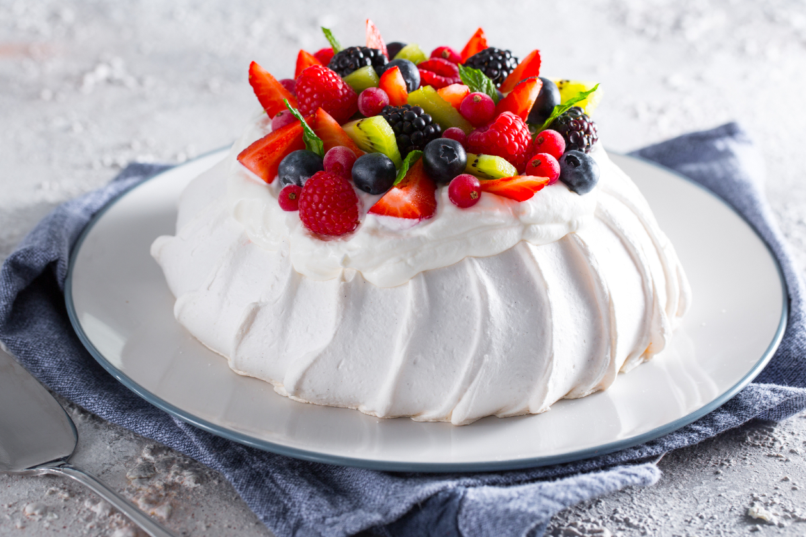
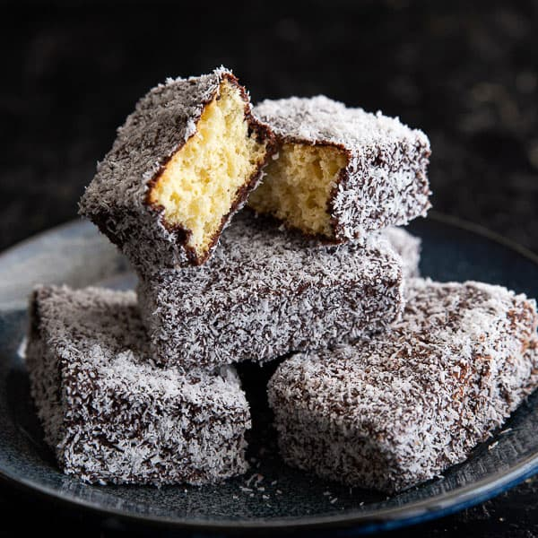

| Attica |
 |
Monday : Closed
Tuesday to Saturday (6am - 10pm) |
Located at Ripponlea, Melbourne |
Dining at Attica in Ripponlea is a commitment of time and money – there are beautiful, rare and unique ingredients and eclectic tunes, but most of all there’s Ben Shewry’s innovative and creative cuisine.
Rated number 20 in the World's Best Restaurants in 2018, it goes without saying that Attica has set the benchmark for fine dining in Melbourne and now embraces a new ambience of graffiti-style artwork and bold black and neon red colour scheme. |
| Rick Shores |
 |
Monday : Closed
Tuesday to Thursday (11.30am - 10pm)
Friday, Saturday (11am - 11pm)
Sunday : 11am - 9pm |
Located at Gold Coast, Queensland |
On the Gold Coast, Rick Shores shows you what dining in Australia is all about.
Pan-Asian flavours, a breezy atmosphere and floor-to-ceiling views of the ocean come together for a meal as much about the surroundings as the dishes that arrive to the table. |
| Wildflower |
 |
Sunday, Monday : Closed
Saturday, Tuesday : 5.30pm - 10pm
Wednesday to Friday : 12pm - 2.30pm, 5.30pm - 10pm |
Located at Cathedral Avenue, Perth |
Occupying the stunning rooftop space of COMO The Treasury, Wildflower serves lunch and dinner against a backdrop of sweeping views across the Swan River and city of Perth.
These contemporary dishes revolve around the indigenous ethos of six seasons with farmer and forager-driven menus. |
| Aubergine |
 |
Monday to Saturday (6pm - 11pm)
Sunday : Closed |
Located at Barker Street Griffith, Canberra |
Aubergine is an intimate space, with high ceilings, beautiful lights and simple, elegant decor which allows the product of creative and interesting food to shine.
The kitchen is stocked by local farmers and suppliers who let the chef know what’s best on the day.
As a result, Aubergine’s menu changes daily and always uses fresh produce to maximise flavour. |
| Brae |
 |
Sunday to Tuesday : Closed
Wednesday : 5pm - 10pm
Thursday to Saturday (12pm - 5pm) |
Located at Victoria, Melbourne |
Brae is a restaurant, guest suites and working organic farm – a place to be immersed in nature and eat from the land.
Brae’s garden-based cuisine has earned them a long list of awards, which further puts Birregurra – a small Victorian town in the Great Ocean Road region – on the culinary map. |